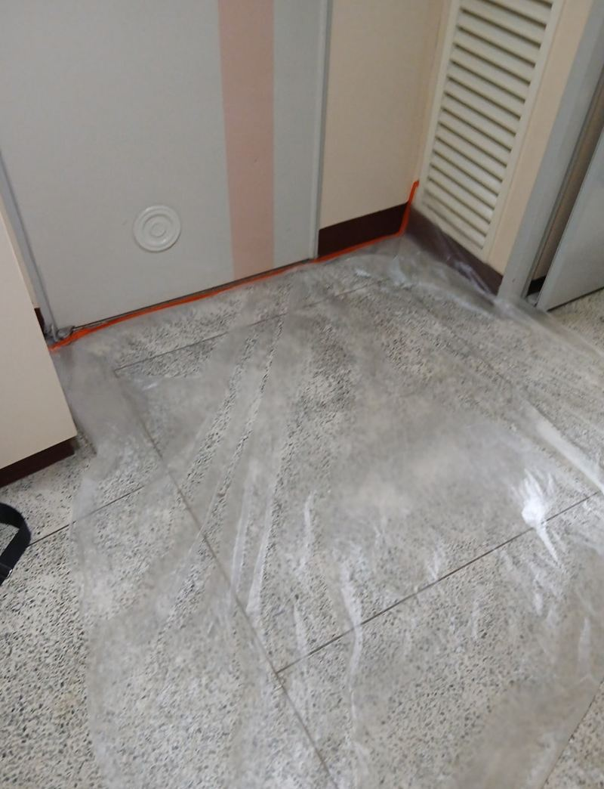
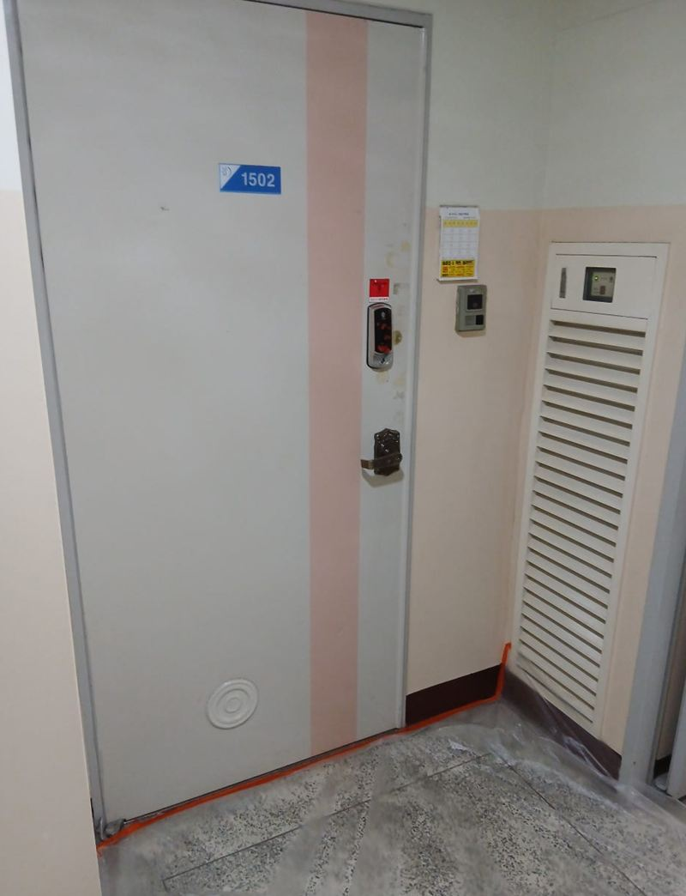
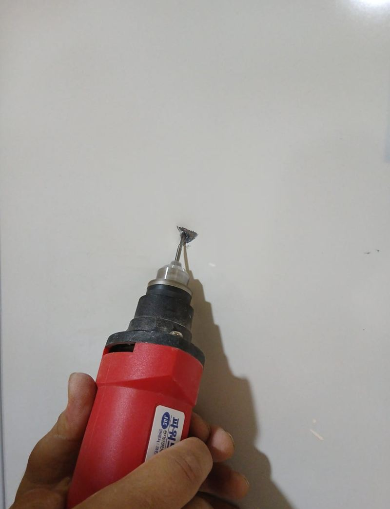
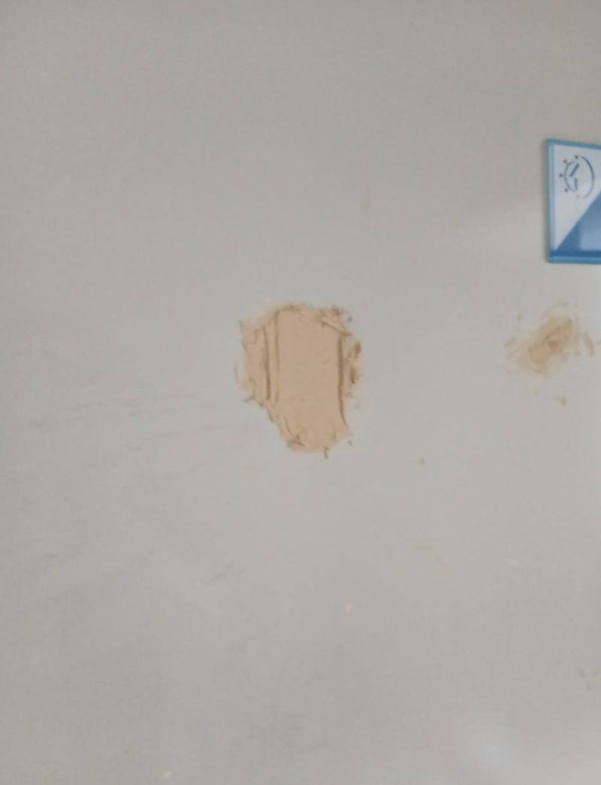
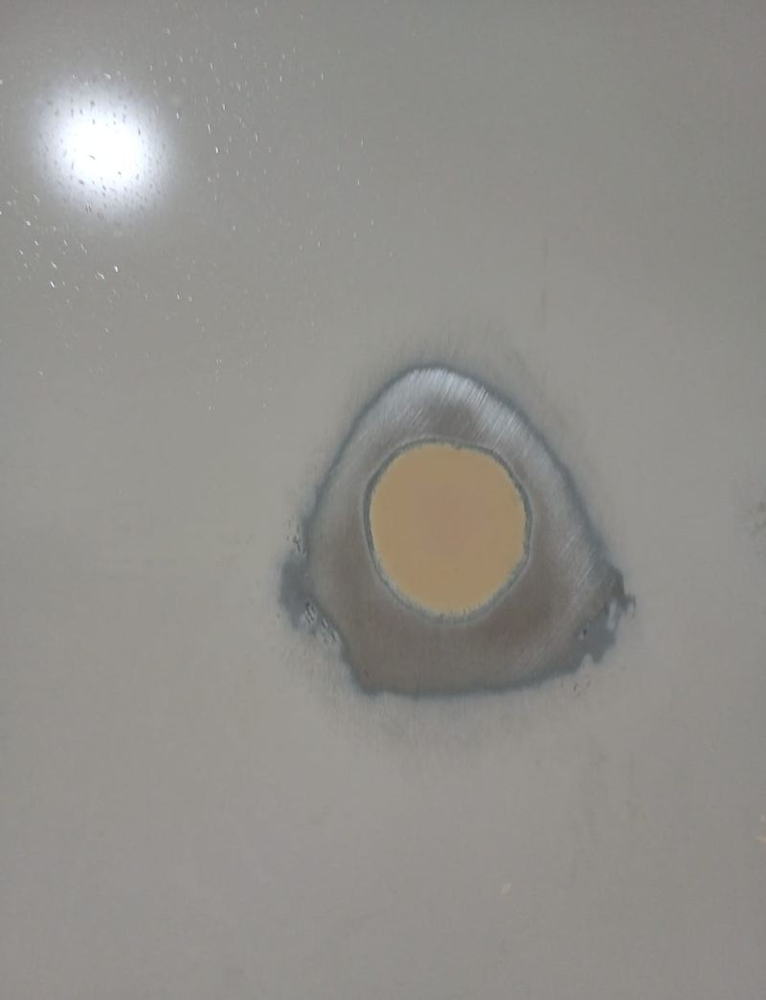
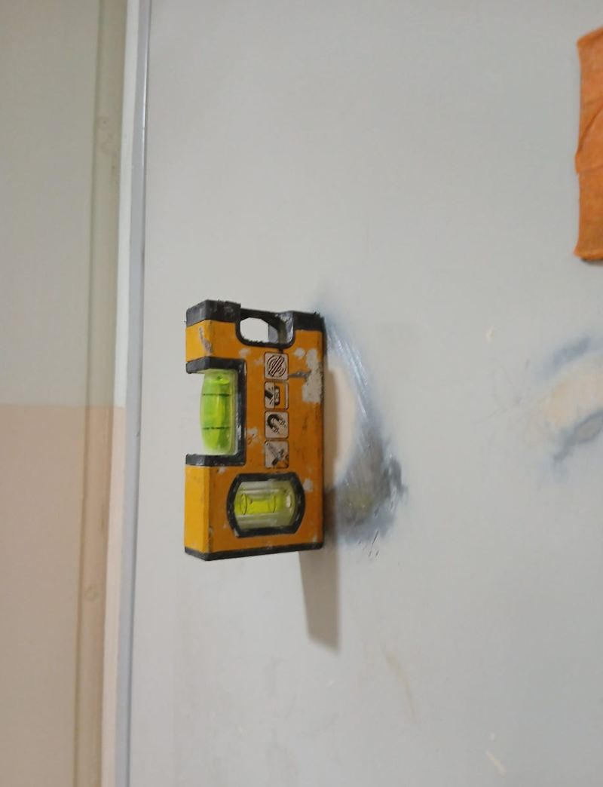

오산 현관 철제문 저렴하게 복원하는 방법
← 밀어서 전후 비교 →
앞집이 이사 나가던 날, 냉장고를 옮기다 우리 집 현관문을 쿵 하고 찍었다는 사연이에요. 이삿짐 기사님이 직접 연락을 주셨고, 고객님은 문 전체를 바꾸기보다 감쪽같이 고칠 수 있으면 그게 좋겠다고 하셨어요. 문틀과 문 기능에 문제가 없어서, 찍힌 자리를 메우고 색을 맞춰 칠하는 복원으로 해결했어요.
| 현장 | 오산 원동 아파트 세대 현관 |
|---|---|
| 손상 | 이삿짐(냉장고) 충돌로 생긴 찍힘·눌림 |
| 판단 | 문틀·잠금·닫힘 정상 → 교체 대신 표면 복원 |
| 한 일 | 보양 → 표면 점검 → 퍼티 → 샌딩 평탄화 → 색 맞춤 → 부분 도색 |
교체할까, 복원할까
| 교체가 필요한 경우 | 복원으로 되는 경우 |
|---|---|
| 문틀이 뒤틀려 문이 안 닫힘 | 표면이 눌리거나 찍힘 |
| 강판이 벌어져 속이 드러남 | 긁힘, 칠 벗겨짐 |
| 잠금장치 자리가 크게 파손 | 색이 바래 얼룩덜룩함 |
이 문은 찍힌 자국은 컸지만 문틀과 잠금, 닫힘이 모두 정상이었어요. 이런 경우는 복원이 교체보다 부담이 적고, 공사 시간도 짧아요.


복원은 이렇게 했어요
재질 확인
아파트 현관문은 강철 도어, 방화문, 도장 철제문 등으로 나뉘고 재질마다 복원 방법이 달라요. 이 문은 도장 철제문이었어요.
퍼티로 메우기
찍혀 들어간 자리에 퍼티를 채우고, 마르기 전에 고르게 펴 발랐어요. 여기서 평평하게 잡지 못하면 칠한 뒤에도 자국이 드러나요.


샌딩으로 평탄화
마른 퍼티를 사포로 갈아 주변 표면과 높이를 맞췄어요.

색 맞춤과 도색
기존 문 색과 가장 가까운 색을 맞춰 칠했어요.

색이 다르게 보이지 않게
현관문 칠은 햇빛과 세월에 따라 처음 색에서 조금씩 변해 있어요. 그래서 공장 기본색을 그대로 쓰면 고친 자리만 튀어 보여요. 지금 문 색을 보고 톤을 맞추고, 경계가 생기지 않게 넓게 풀어 칠했어요. 가까이서 아주 자세히 보면 차이가 느껴질 수 있지만, 문 앞에 섰을 때는 거의 구분되지 않게 맞췄어요.
현관문 복원, 이런 경우 많이 맡겨요
- 이사·택배 짐에 찍혔어요가해자 측 보험이나 이삿짐 업체 처리로 맡기시는 경우가 많아요.
- 문 아래가 녹슬고 칠이 일어났어요녹을 정리하고 방청 후 다시 칠해요.
- 강제로 열린 뒤 자국이 남았어요문틀이 멀쩡하면 표면 복원으로 정리돼요.
- 집 내놓기 전 현관을 정리하고 싶어요현관 인상이 깔끔해져요.
복원 vs 교체, 비용 차이가 나는 이유
- 복원문은 그대로 두고 손상 부위만 메우고 칠해요. 공정이 짧아요.
- 교체문 제작, 철거, 설치, 폐기까지 들어가 공정이 길어요.
- 판단 기준문틀·잠금·닫힘이 멀쩡한지가 갈림길이에요.
현관문 복원 질문
보험 처리용 서류를 받을 수 있나요?
작업 전후 사진과 작업 내용을 정리해 드릴 수 있어요. 필요한 서류를 미리 말씀해 주세요.
칠 냄새가 오래가나요?
작업 중과 직후 냄새가 날 수 있어요. 환기해 주시면 금방 빠져요.
문을 닫아 둬도 되나요?
칠이 마를 때까지 문틀과 닿지 않게 살짝 열어 두는 게 좋아요. 마르는 시간은 작업 후 안내해요.
방화문도 복원할 수 있나요?
표면 찍힘은 복원할 수 있어요. 방화 성능에 영향을 줄 정도로 파손됐다면 교체를 권해요.
문 전체 색을 바꿀 수도 있나요?
가능해요. 다만 공동주택은 현관 색 규정이 있는 곳이 있어 관리사무소에 먼저 확인해 주세요.
도어락 주변 찍힘도 되나요?
도어락을 잠시 떼고 작업한 뒤 다시 달아요.
복원 시간은 얼마나 걸리나요?
퍼티와 칠이 마르는 시간이 있어 반나절 안팎이 걸려요. 손상 정도에 따라 달라요.
찍힌 자국이 여러 군데면요?
범위가 넓으면 문 한 면 전체를 다시 칠해 색을 고르게 맞추는 게 깔끔해요.
다른 현관문·방화문 현장
현관문 전체와 찍힌 자리를 가까이 찍어 보내 주세요.
전화 상담 010-4517-9872